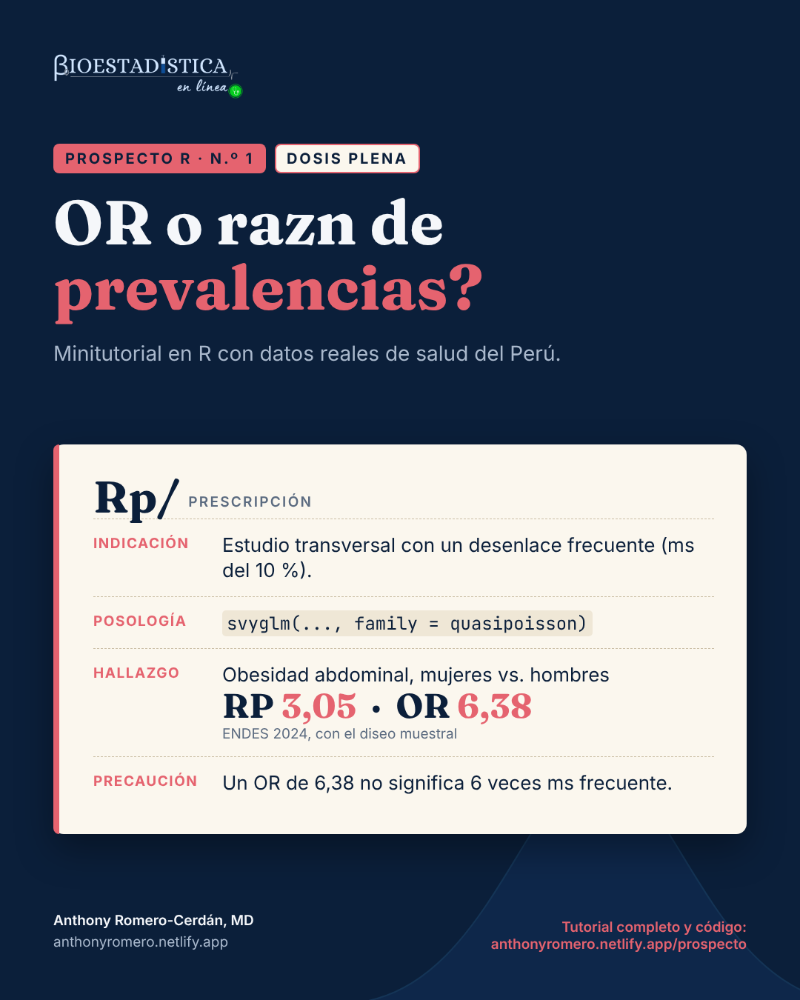

Dosis plena: razón de prevalencias en una encuesta con diseño muestral complejo
Prospecto R n.º 1, dosis plena. Con la ENDES 2024: por qué el odds ratio exagera la asociación cuando el desenlace es frecuente, cómo estimar la razón de prevalencias con el diseño muestral y cómo obtenerla también desde una regresión logística.
Dosis plena
medidas de asociación
estudios transversales
encuestas complejas
ENDES
Autor/a
Anthony Romero-Cerdán, MD
Fecha de publicación
3 de septiembre de 2026

Prospecto R es una serie de minitutoriales de análisis de datos de salud en R. Cada entrega responde una pregunta concreta con datos reales del Perú, explica la teoría mínima necesaria y muestra el código completo con sus resultados. Las cifras de este texto se calculan al compilar el documento: no se escriben a mano.
Tip¿Qué dosis te toca?
Cada tema de Prospecto R viene en dos niveles. La dosis inicial tiene lo indispensable para hacer el análisis e interpretarlo bien. La dosis plena tiene todo, incluido lo complejo. Responde:
¿Has ajustado una regresión (logística o de Poisson) en R?
¿Sabes para qué sirven los pesos, los conglomerados y los estratos de una encuesta?
¿Unes dos bases de datos en R sin ayuda?
Si respondiste «sí» a las tres, sigue con la dosis plena. Si alguna fue «no», empieza por la dosis inicial.
Estás en la dosis plena. Aquí va todo: el diseño muestral de la encuesta, el ajuste por confusión, la estandarización marginal y las trampas propias de la ENDES. Si es tu primer contacto con el tema, empieza por la dosis inicial.
Nivel
Dosis plena
Pregunta
¿Qué medida de asociación reporto en un estudio transversal con un desenlace frecuente?
Datos
ENDES 2024, Cuestionario de Salud (INEI)
Paquetes
data.table, survey, ggplot2, marginaleffects
Requisitos
Haber ajustado una regresión en R y conocer los pesos, conglomerados y estratos de una encuesta
Estás analizando un estudio transversal con un desenlace binario (sí/no) y quieres cuantificar su asociación con una exposición. Si el desenlace es frecuente (como regla práctica, más del 10 %), la medida que responde directamente a tu pregunta es la razón de prevalencias (RP), no el odds ratio (OR).
Composición
En un estudio transversal mides la prevalencia del desenlace en expuestos (P_1) y en no expuestos (P_0). Con los conteos de una tabla 2×2:
Con desenlace
Sin desenlace
Expuestos
a
b
No expuestos
c
d
P_1 = a/(a+b) y P_0 = c/(c+d). Con esas dos prevalencias puedes construir dos medidas:
La RP compara proporciones: “la prevalencia en expuestos es k veces la de no expuestos”. El OR compara odds (chances), una escala que casi nadie interpreta de forma intuitiva. Las dos medidas se relacionan así:
\text{OR} = \text{RP} \times \frac{1-P_0}{1-P_1}
Si el desenlace es raro, P_0 y P_1 están cerca de 0, la fracción vale casi 1 y el OR se parece a la RP. Si el desenlace es frecuente, la fracción crece y el OR se aleja de 1 más que la RP. La regresión logística estima un OR, así que en un estudio transversal con desenlace frecuente exagera la asociación si la lees como una razón de prevalencias.
En el portal de microdatos del INEI (https://proyectos.inei.gob.pe/microdatos/), elige Consulta por encuestas, luego ENDES y el año 2024, y descarga en formato CSV estos tres módulos:
Módulo
Archivo
Contenido
1629
RECH0_2024.csv
Datos del hogar: conglomerado, estrato y área de residencia
1632
RE223132_2024.csv
Cuestionario individual de mujeres: embarazo actual
1640
CSALUD01_2024.csv
Cuestionario de salud de personas de 15 y más años
Descomprime los tres archivos dentro de una carpeta ENDES/2024/, junto a tu archivo .qmd. Cada uno crea su propia subcarpeta; en la descarga de 2024 se llaman 968-Modulo1629, 968-Modulo1632 y 968-Modulo1640. Si tus datos están en otro lugar o las carpetas tienen otro nombre, cambia ruta en el siguiente bloque de código.
Paso 2. Lee y une los módulos
Ver código
library(data.table)ruta <-"ENDES/2024"# carpeta con los módulos descomprimidosif (!dir.exists(ruta)) stop("No encuentro la carpeta '", ruta, "'. Revisa el Paso 1 o cambia `ruta`.")salud <-fread(file.path(ruta, "968-Modulo1640/CSALUD01_2024.csv"), encoding ="UTF-8")hogar <-fread(file.path(ruta, "968-Modulo1629/RECH0_2024.csv"), encoding ="UTF-8",select =c("HHID", "HV001", "HV022", "HV025"))mujer <-fread(file.path(ruta, "968-Modulo1632/RE223132_2024.csv"), encoding ="UTF-8",select =c("CASEID", "V213"))# la llave del hogar trae espacios a la izquierda: hay que limpiarlasalud[, HHID :=trimws(HHID)]hogar[, HHID :=trimws(HHID)]# CASEID = hogar + número de línea de la mujermujer[, `:=`(HHID =trimws(substr(CASEID, 1, nchar(CASEID) -3)),linea =as.integer(substr(CASEID, nchar(CASEID) -1, nchar(CASEID))))]d <-merge(salud, hogar, by ="HHID")d <-merge(d, mujer[, .(HHID, linea, V213)],by.x =c("HHID", "QS20C"), by.y =c("HHID", "linea"), all.x =TRUE)nrow(d)n_union <-nrow(d)
Mira el resultado
#> [1] 34018
El número es la cantidad de filas tras unir los módulos: una por cada persona del Cuestionario de Salud que encontró su hogar (34 018). Si te sale 0 o una cifra muy baja, la llave HHID no coincidió entre módulos; casi siempre es por los espacios que limpia trimws().
QS20C es el número de línea de la persona que respondió el Cuestionario de Salud; con él se identifica a cada mujer en el cuestionario individual.
Paso 3. Construye las variables
La obesidad abdominal se define con el perímetro de cintura y los puntos de corte del ATP III: más de 102 cm en hombres y más de 88 cm en mujeres. Se excluye a las gestantes, porque en ellas el perímetro abdominal no mide adiposidad.
Ver código
d <- d[!is.na(PESO15_AMAS)] # personas con entrevista de saludd[, peso := PESO15_AMAS /1e6] # el factor viene con 6 decimales implícitosd[, mujer :=factor(QSSEXO, 1:2, c("Hombre", "Mujer"))]d[, area :=factor(HV025, 1:2, c("Urbana", "Rural"))]d[, edad :=cut(QS23, c(15, 30, 45, 60, Inf), right =FALSE,labels =c("15-29", "30-44", "45-59", "60+"))]d[, gestante :=!is.na(V213) & V213 ==1]# perímetro abdominal válido: medido (QS908 = 1) y dentro del rango del diccionariod[, cintura :=fifelse(QS908 ==1& QS907 >=55& QS907 <=170, as.numeric(QS907), NA_real_)]d[gestante ==TRUE, cintura :=NA]d[, obes_abd :=as.integer(fifelse(mujer =="Mujer", cintura >88, cintura >102))]d[, .N, by = .(mujer, medida =!is.na(obes_abd))][order(mujer, medida)]
Cada fila cuenta personas por sexo. medida = TRUE son quienes tienen la obesidad abdominal calculable; FALSE, quienes no tienen una medición válida o están gestando. El análisis usa solo las filas TRUE: 17 587 mujeres y 12 906 hombres. Si los FALSE fueran muchos en un solo grupo, sería una alerta de sesgo de selección.
HV001 es el conglomerado, HV022 el estrato y peso el factor de expansión del Cuestionario de Salud. Usar subset() sobre el diseño, y no filtrar la base antes, mantiene la información de todos los conglomerados para calcular bien los errores estándar.
obes_abd es la prevalencia como proporción: el promedio de una variable 0/1 es la proporción de unos. 0,6195 equivale a 62,0 %.
se es su error estándar, calculado con el diseño. Multiplicado por 1,96 da el margen del intervalo de confianza del 95 %.
La prevalencia de obesidad abdominal es 62,0 % en mujeres y 20,3 % en hombres (n = 30 493).
Paso 6. Estima la razón de prevalencias
La RP se obtiene con una regresión de Poisson con enlace logarítmico. Con un desenlace binario, el modelo de Poisson clásico da intervalos demasiado anchos; en una encuesta, svyglm() calcula errores estándar basados en el diseño, que además son robustos, y eso lo corrige. La familia quasipoisson evita el aviso por valores no enteros.
Se lee igual que la RP, pero la cifra es un odds ratio: 6,38. Mismos datos, mismo intervalo de confianza en la forma, distinta medida.
Comprueba a mano que la RP es el cociente de las prevalencias del paso 5:
Ver código
p_m / p_h(p_m / (1- p_m)) / (p_h / (1- p_h))
Mira el resultado
#> [1] 3,047618
#> [1] 6,382095
El primer número debe coincidir con la RP del paso 6 y el segundo con el OR del paso 7. Si no coinciden, el modelo y las prevalencias no se calcularon sobre la misma población.
Resultado
Medida
Estimación
Prevalencia en mujeres
62,0 %
Prevalencia en hombres
20,3 %
Razón de prevalencias
3,05 (IC 95 %: 2,86 a 3,24)
Odds ratio
6,38 (IC 95 %: 5,83 a 6,98)
Los dos modelos usan los mismos datos, pero cuentan historias distintas. La RP dice que la obesidad abdominal es 3,05 veces más frecuente en mujeres que en hombres. El OR, 6,38, es un cociente de odds y aquí es 2,1 veces la RP: si se lee como “6 veces más frecuente”, la asociación queda más que duplicada.
Interacciones
Con variables de confusión. El ajuste se hace igual, agregando covariables al modelo. Aquí, edad y área de residencia:
#> Estimación IC 2,5 % IC 97,5 %
#> RP 2,98 2,81 3,17
#> OR 7,61 6,91 8,38
Cada fila es la medida ajustada por edad y área, con su intervalo de confianza. Compárala con la cruda: la RP pasa de 3,05 a 2,98 y el OR de 6,38 a 7,61. La RP cambió menos de 10 %: la edad y el área casi no confunden esta asociación.
La brecha no desaparece con el ajuste (RP ajustada 2,98; OR ajustado 7,61): depende de que el desenlace sea frecuente, no de la confusión.
Con el diseño muestral. Los pesos cambian la estimación puntual; los conglomerados y estratos, su precisión:
Ver código
dc <- d[!is.na(obes_abd)]# 1. sin pesos: prevalencias de la muestra, no de la poblaciónsin_pesos <- dc[, .(prevalencia =mean(obes_abd)), by = mujer]sin_pesosrp_sp <- sin_pesos[mujer =="Mujer", prevalencia] / sin_pesos[mujer =="Hombre", prevalencia]rp_sp# 2. con pesos pero sin conglomerados ni estratos: el error estándar cambiadis_ingenuo <-svydesign(ids =~1, weights =~peso, data = dc)m_ingenuo <-svyglm(obes_abd ~ mujer, design = dis_ingenuo, family =quasipoisson(link ="log"))c(diseno_completo =SE(m_rp)[["mujerMujer"]], solo_pesos =SE(m_ingenuo)[["mujerMujer"]])
Son tres resultados seguidos. La tabla muestra la prevalencia sin pesos en cada sexo; el número que le sigue es la RP sin pesos; el último par compara el error estándar del coeficiente con el diseño completo y solo con pesos.
Sin pesos, las prevalencias bajan a 58,7 % en mujeres y 17,0 % en hombres, y la RP sube a 3,44 (es la cifra que obtiene la dosis inicial), porque la muestra no reproduce la composición de la población. En este desenlace, ignorar los conglomerados y estratos cambia poco el error estándar (0,0318 frente a 0,0313). En desenlaces más agrupados geográficamente la diferencia puede ser mucho mayor, y no se sabe de antemano: por eso se declara siempre el diseño completo.
Con la regresión logística. Si tu protocolo exige un modelo logístico, igual puedes reportar una RP ajustada: predice la probabilidad del desenlace para toda la población como si todos fueran mujeres y luego como si todos fueran hombres, y divide los promedios ponderados. Es la estandarización marginal. A mano:
Un solo número: la RP estandarizada, 2,97. Es la prevalencia que tendría la población si todos fueran mujeres dividida entre la que tendría si todos fueran hombres, con la misma edad y área que tienen en la realidad.
El paquete marginaleffects hace lo mismo y añade el intervalo de confianza con la matriz de varianzas del diseño:
contrast indica qué se divide entre qué (mean(Mujer) / mean(Hombre)), estimate es la RP y conf.low y conf.high son los límites del intervalo de confianza del 95 %.
La RP estandarizada, 2,97 (IC 95 %: 2,80 a 3,15), coincide con la del modelo de Poisson ajustado (2,98). El modelo es logístico, pero la medida que se reporta es una razón de prevalencias.
Advertencia"ratioavg", no "ratio"
comparison = "ratio" calcula el cociente de cada persona y luego lo promedia; "ratioavg" divide los promedios, que es la definición de la RP. Aquí "ratio" da 3,55, una cifra que no es la razón de prevalencias de la población.
Con el modelo log-binomial. Es la otra forma de estimar la RP directamente, pero con desenlaces frecuentes suele fallar:
#> [1] "no valid set of coefficients has been found: please supply starting values"
No es un fallo de tu código. El mensaje no valid set of coefficients has been found significa que el algoritmo no encontró coeficientes que den probabilidades entre 0 y 1 para todas las personas.
El enlace logarítmico no impide que una probabilidad predicha supere 1, y el algoritmo no encuentra coeficientes válidos. Darle valores iniciales (start =) a veces lo resuelve y a veces no; el modelo de Poisson y la estandarización marginal no tienen ese problema.
Contraindicaciones y reacciones adversas
Leer el OR como una razón de prevalencias. Es el error más frecuente. Un OR de 6,38 no significa “6 veces más frecuente”.
Usar la regresión logística por costumbre. En un estudio transversal con desenlace frecuente, el modelo de Poisson con errores robustos (o con diseño, en encuestas) estima la RP directamente.
Usar glm(family = poisson) sin errores robustos en datos que no son de encuesta. Los intervalos salen demasiado anchos. Calcula errores robustos, por ejemplo con sandwich::vcovHC() y lmtest::coeftest().
Modelo log-binomial que no converge. También estima la RP, pero falla a menudo con prevalencias altas, como se vio arriba. Usa el modelo de Poisson o la estandarización marginal.
Reportar el OR de la logística como si fuera RP. Si usas un modelo logístico, convierte el resultado con estandarización marginal.
Ignorar el diseño de la ENDES. Sin pesos, las prevalencias describen la muestra y no la población; sin conglomerados ni estratos, los intervalos de confianza son incorrectos.
Filtrar la base antes de declarar el diseño. Usa subset() sobre el objeto svydesign.
Desenlace raro. Si la prevalencia es baja (menos de 10 %), el OR y la RP casi coinciden y la logística es aceptable.
AdvertenciaPrecaución propia de la ENDES
En el módulo de salud (CSALUD01), el peso y la talla de casi todas las mujeres de 15 a 49 años figuran como “evaluada en el cuestionario del hogar” (QS902 = 4): sus medidas están en otro módulo. Si calculas el índice de masa corporal solo con CSALUD01, comparas a casi todos los hombres con las mujeres que no están en edad fértil. Revisa siempre los códigos de resultado de cada medición antes de analizar.
Cómo reportarlo
En la población peruana de 15 y más años (ENDES 2024), la prevalencia de obesidad abdominal fue 62,0 % en mujeres y 20,3 % en hombres; la razón de prevalencias fue 3,05 (IC 95 %: 2,86 a 3,24). Las estimaciones consideraron el diseño muestral complejo de la encuesta.
En métodos, indica el modelo (“regresión de Poisson con enlace logarítmico y varianza basada en el diseño muestral”) y la definición de cada variable.
Autoevaluación
1. Filtras la base a las personas con cintura válida y recién después declaras svydesign(). ¿Qué cambia?
Ver respuesta
Las estimaciones puntuales no cambian, pero los errores estándar pueden quedar mal: el diseño pierde la información de los conglomerados y estratos sin observaciones. Declara el diseño con toda la base y usa subset() sobre él, como en el Paso 4.
2. Tu jurado exige regresión logística, pero el desenlace es frecuente. ¿Cómo reportas una razón de prevalencias?
Ver respuesta
Con estandarización marginal: avg_comparisons(modelo, variables = "mujer", comparison = "ratioavg", wts = "(weights)"). No uses comparison = "ratio", que promedia cocientes individuales.
3. Sin pesos la RP fue 3,44; con el diseño, 3,05. ¿Cuál reportas para la población peruana?
Ver respuesta
3,05. Sin pesos, la cifra describe a las personas entrevistadas; los pesos devuelven a cada grupo su tamaño real en la población.
Control de calidad
Antes de confiar en un flujo de análisis con la ENDES, conviene reproducir una cifra oficial. El INEI reporta que en 2024 el 14,2 % de las personas de 15 y más años tenía presión arterial alta según medición, excluyendo a las gestantes (Perú: Enfermedades No Transmisibles y Transmisibles, 2024, cuadro 1.1).
#> mean SE
#> pa_alta 0,14154 0,0036
#> mujer pa_alta se
#> Hombre Hombre 0,1832841 0,005835153
#> Mujer Mujer 0,1024955 0,004073737
El primer bloque es la prevalencia de presión arterial alta en toda la población (columna mean) y el segundo, por sexo (columna pa_alta). Las dos están en proporciones: multiplica por 100 para compararlas con el informe del INEI.
El INEI publica 14,2 % en total, 18,3 % en hombres y 10,3 % en mujeres. Nuestro flujo obtiene 14,2 %, 18,3 % y 10,2 %. El total y los hombres coinciden; en mujeres hay una décima de diferencia. El cuadro oficial reporta 17 787 mujeres con medición y nuestra base tiene 17 799, así que el INEI aplica algún criterio de exclusión adicional que no pudimos identificar en el informe.
¿Tu tesis usa la ENDES u otra encuesta nacional?
Te ayudo a declarar el diseño muestral, correr el análisis en R y redactar los resultados.
Zou G. A modified Poisson regression approach to prospective studies with binary data. Am J Epidemiol. 2004;159(7):702-6.
Barros AJD, Hirakata VN. Alternatives for logistic regression in cross-sectional studies: an empirical comparison of models that directly estimate the prevalence ratio. BMC Med Res Methodol. 2003;3:21.
Lumley T. Analysis of complex survey samples. J Stat Softw. 2004;9(8):1-19.
Expert Panel on Detection, Evaluation, and Treatment of High Blood Cholesterol in Adults. Executive summary of the third report of the National Cholesterol Education Program (NCEP) Adult Treatment Panel III. JAMA. 2001;285(19):2486-97.
Muller CJ, MacLehose RF. Estimating predicted probabilities from logistic regression: different methods correspond to different target populations. Int J Epidemiol. 2014;43(3):962-70.
Arel-Bundock V, Greifer N, Heiss A. How to interpret statistical models using marginaleffects for R and Python. J Stat Softw. 2024;111(9):1-32.
Instituto Nacional de Estadística e Informática. Perú: Enfermedades No Transmisibles y Transmisibles, 2024. Lima: INEI; 2025.
Reproducibilidad
Mira el resultado
#> R version 4.3.3 (2024-02-29)
#> data.table 1.14.10
#> survey 4.5
#> ggplot2 3.4.4
#> marginaleffects 0.18.0